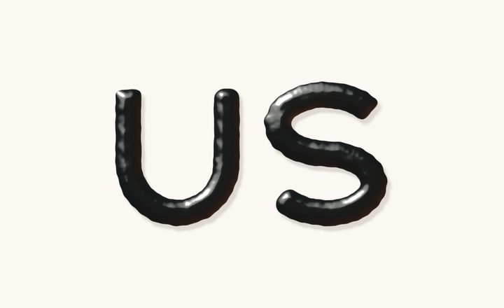
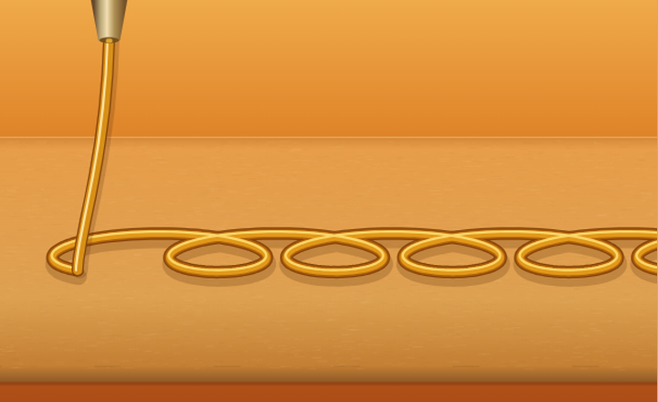
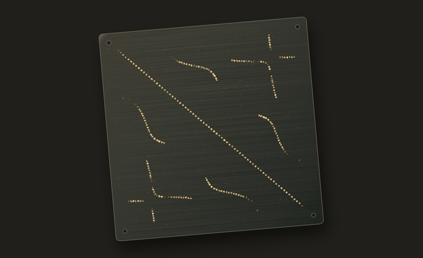
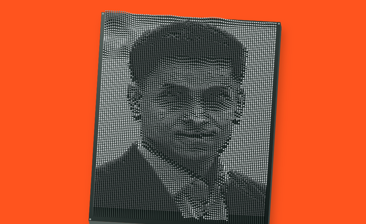

Same Usman.
Different physics.
Five little ways to meet a curious engineer.
These are separate, playable landing-page studies. Open one, make a mess, then try another. The main portfolio stays as it is.
Choose an experiment
Made to be touched. Not just watched.

Liquid Identity
Pull the initials into threads and droplets. Let go and they find their way back.
Magnetic inkWet-ink Usman
Stir a portrait into curling ink. Add a drop of orange. Keep the impression.
Ink on water
Honey Plotter
A falling thread, a moving belt, and a line that refuses to stay straight.
Viscous thread
Singing Sand
Tune a vibrating plate. Watch ordinary grains find extraordinary arrangements.
Vibrating grains
Pin-art Portrait
A face made of tiny moving pins. Press it flat, then let it remember itself.
Spring-loaded pinsStill me underneath.
Mechanical engineering, practical software, and a healthy curiosity about how things move.